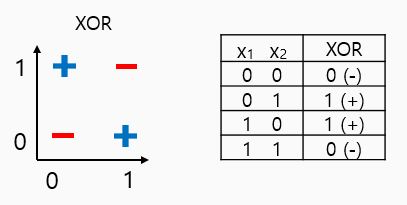

One logistic regression unit cannot separate XOR

한 개의 logistic regression으로는 XOR을 해결할 수 없다는 것이 증명됨 - marvin minsky
XOR using NN

위의 XOR을 linear하게 구분 할 수 없던 문제를 3개의 network로 해결해본다.
Neural Net
3개의 Network로 정말 XOR을 풀 수 있는지 증명해보자.
위의 식을 차례대로 계산해서 결과를 얻을 수 있다.
각 weight와 bias가 위와 같이 주어졌다고 가정하고 문제를 풀어보면,
아래와 같은 결과가 나온다.
p.s. 직접 계산해보는 것을 강력히 권장한다.
Forward propagation
위의 weights와 biases들은 아래와 매칭된다.
p.s. 교수님께서 또 다른 Weight와 Bias를 찾아볼 것을 권장하신다.
NN using multinomial classification format
최종적으로 위와 같이 multinomial형식으로 나타낼 수 있다.
위의 도식을 식으로 나타내면 아래와 같다.
tensorflow implementation
# NN
K = tf.sigmoid(tf.matmul(X, W1) + b1)
hypothesis = tf.sigmoid(tf.matmul(K, W2) + b2)How can we learn W1, W2, B1, b2 from training data?
using Gradient Descent Algorithm!
Gradient descent알고리즘을 사용하기 위해서는 각 노드들의 미분 값을 계산해야 한다.
Backpropagation (chain rule)
chain rule
- forward (w=-2, x=5, b=3)
- backward
Sigmoid 미분 시키기
각 단계별 chain rule 적용
Backpropagation in TensorFlow
Tensor Board
hypothesis = tf.sigmoid(tf.matmul(L2, W2) + b2)위의 코드는 tensorflow에서 제공하는 GUI 그래프 시각화 툴인 TensorBoard로 아래와 같이 표현된다.